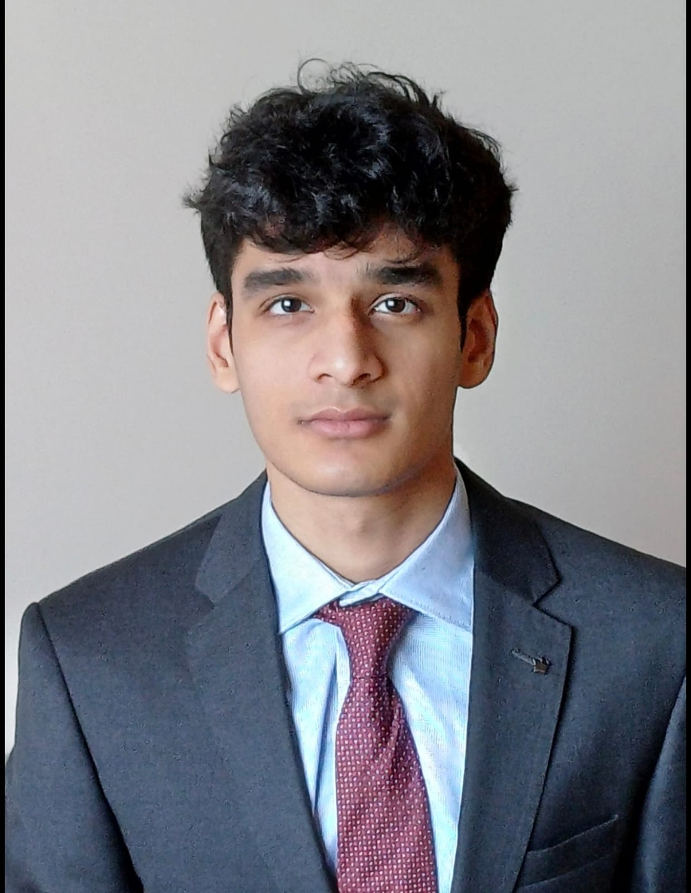
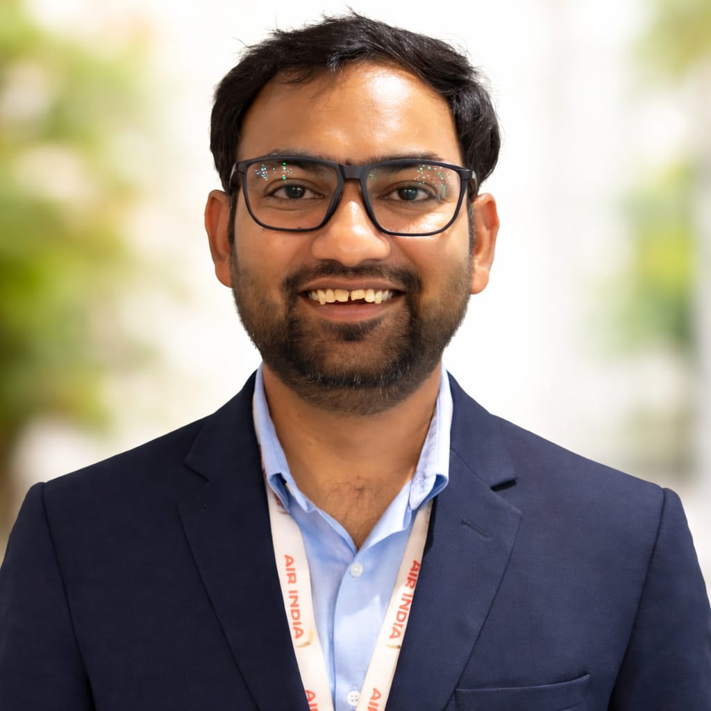
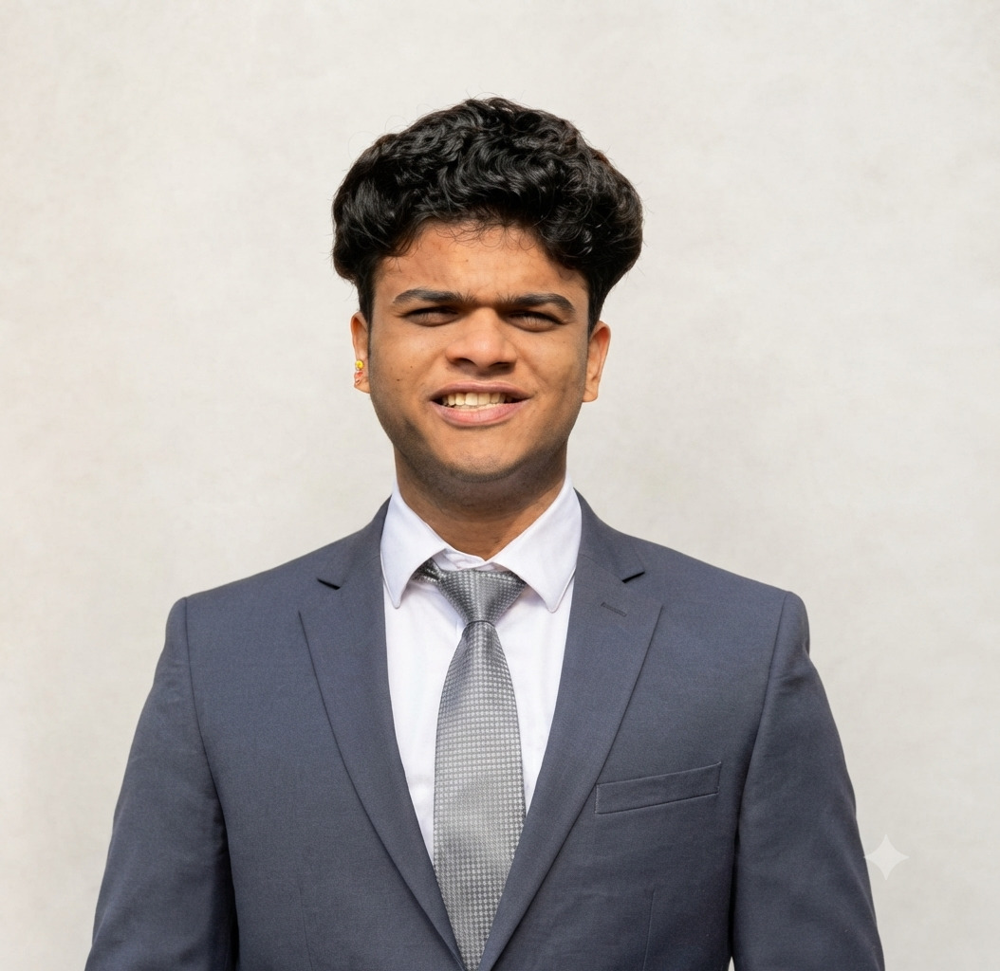

Apaar Neel Chakma
IIM Calcutta · Ex-Accenture, Strategy Analyst
B.E., University of Delhi
Expertise: Growth Strategy, Commercial Due Diligence, Market Intelligence and Digital Strategy.
Our partnership
Our six founding partners bring distinct perspectives and a shared commitment to rigorous thinking, collaborative work and measurable client impact.
Meet our partners
IIM Calcutta · Ex-Accenture, Strategy Analyst
B.E., University of Delhi
Expertise: Growth Strategy, Commercial Due Diligence, Market Intelligence and Digital Strategy.
IIM Calcutta · Ex-Deloitte USI, M&A Consulting
B.Tech, IIT Hyderabad
Expertise: Corporate Strategy, M&A Strategy, Operations Transformation and Technology Strategy.
IIM Calcutta · Ex-Flipkart, Supply Chain Management
BBA (Hons.), OP Jindal Global University
Expertise: Supply Chain Strategy, Operations Excellence, Growth Strategy and Performance Improvement.

IIM Calcutta · Ex-UTI Alternatives, Private Credit
B.E., BITS Pilani
Expertise: Financial Advisory, Commercial Due Diligence, Valuation and Private Credit.

IIM Calcutta · Ex-Air India Express, Strategic Ops
B.Tech, IIT Dhanbad
Expertise: Operations Transformation, Manufacturing Strategy, Operational Excellence and Capital Projects.

IIM Calcutta · Ex-Motilal Oswal, Institutional Equity
BBA, IIM Rohtak
Expertise: Financial Strategy, Business Analytics, Capital Markets and Market Intelligence.